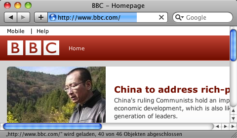
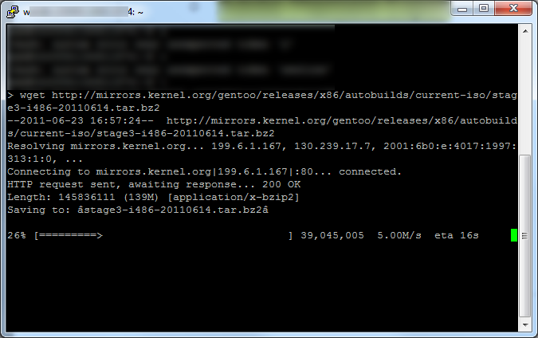

| Usability Pattern | Fortschrittsanzeige |
|---|---|
| Problem | Wenn das System eine Aktion ausführt, die längere Zeit dauert, möchten wartende Benutzer wissen, wie die Ausführung voranschreitet und wie lange sie noch dauern wird. |
| Lösung |
Zeige den aktuellen Fortschritt bei der Ausführung der Aktion und ermögliche Benutzern abzuschätzen, wie lange die Ausführung noch dauern wird. Der Fortschritt kann z. B. durch einen Fortschrittsbalken oder eine prozentuale Angabe dargestellt werden. Wenn die ausgeführte Aktion aus mehreren Einzelschritten besteht, sollten die bereits abgeschlossenen und der aktuell ausgeführte Verarbeitungsschritt angezeigt werden. Mit einer animierten Darstellung kann verdeutlicht werden, dass die Ausführung der Aktion noch aktiv und nicht abgeschlossen ist. Wenn die Ausführung einer Aktion im Einzelfall deutlich länger dauert als vom Benutzer erfahrungsgemäß zu erwarten ist, sollte das System den Grund für die längere Verarbeitungsdauer anzeigen. |
| Illustration | Ein Programm zur Verwaltung von Aktiendepots bietet Benutzern die Möglichkeit, aktuelle Aktienkurse für vorhandene Depotwerte durch Abfrage eines Kursanbieters im Internet zu ermitteln. Diese Abfrage benötigt erfahrungsgemäß ca. eine Sekunde pro Aktienkurs, bei umfangreichen Depots also längere Zeit. Während der Aktualisierung der Aktienkurse zeigt das System deshalb einen Fortschrittsbalken an, der die Zahl der bereits ermittelten Aktienkurse im Verhältnis zur Gesamtzahl zu ermittelnder Aktienkurse visualisiert. Auf diese Weise können Benutzer den Fortschritt bei der Kursaktualisierung erkennen und außerdem abschätzen, wie lange der Vorgang noch dauern wird. |
| Beispiele |
Apple Safari 5 (Web-Browser): Laden einer Website Beim Laden einer Website zeigt Safari den Fortschritt des Ladevorgangs auf zweierlei Weise an: durch einen Fortschrittsbalken im Hintergrund der Adresszeile und durch die Angabe der bereits geladenen und noch zu ladenden Objekte (Seiten, Grafiken, Skripte etc.) in der Statuszeile (im Beispiel „... wird geladen, 40 von 46 Objekten abgeschlossen“).  Fortschrittsanzeige in Safari wget: Download von Dateien Das kommandozeilenbasierte Download-Werkzeug wget zeigt beim Download von Dateien einen rudimentären Fortschrittsbalken mit prozentualer Angabe der Fertigstellung an.  Fortschrittsanzeige beim Download einer Datei in wget |
| Nutzungskontext |
|
| Begründung | Benutzern, die auf das Resultat der Aktion warten, wird durch die Fortschrittsanzeige vermittelt, dass die Ausführung aktiv und noch nicht abgeschlossen ist. Der aktuelle Zustand des Systems ist für Benutzer auf diese Weise erkennbar, und sie können abschätzen, wie lange sie noch warten müssen. |
| Risiken, Nachteile, Kosten | Der angezeigte Fortschritt muss Benutzern eine realistische Einschätzung des tatsächlichen Verarbeitungsfortschritts und der verbleibenden Verarbeitungsdauer ermöglichen. Kann dieser Zusammenhang nicht hergestellt werden – etwa, wenn die ersten 50% nur wenige Sekunden benötigen, die verbleibenden 50% dann aber mehrere Minuten –, verhält sich das System nicht erwartungskonform; Benutzer werden so irritiert oder verärgert. |
| Zusammenspiel |
Ergänzung Ausführung im Hintergrund Bei der Hintergrundausführung können Benutzern langdauernde Verarbeitungsschritte im Hintergrund auszuführen lassen und währenddessen zunächst normal mit dem System weiterzuarbeiten. Eine nichtmodale Fortschrittsanzeige kann Benutzer dabei über den Verarbeitungsfortschritt informieren. Ergänzung Abbruch Die Fortschrittsanzeige unterstützt Benutzer bei der Einschätzung der verbleibenden Verarbeitungsdauer. Wenn die Verarbeitung aus Sicht der Benutzer zu lange dauert, sollten sie die Möglichkeit haben, die Verarbeitung abzubrechen. Ergänzung Vorschau Falls die Ausführung einer Aktion längere Zeit benötigt, kann eine Vorschau auf die Resultate Benutzern helfen einzuschätzen, ob sie die Aktion tatsächlich ausführen möchten. Alternative Verarbeitungsanzeige Falls der Fortschritt einer Aktion nicht bestimmt oder sinnvoll dargestellt werden kann, können Benutzer alternativ auch mit einer Verarbeitungsanzeige darüber informiert werden, dass die Aktion noch ausgeführt wird. |
| Anforderungserhebung |
Identifiziere Aktionen, für deren Ausführung das System längere Zeit benötigt.
Überlege, wie die Fortschrittsanzeige für verschiedene Aktionen einheitlich dargestellt werden kann.
|
| Anforderungsspezifikation |
Spezifiziere globale Vorgaben für den Einsatz des Usability Patterns „ Fortschrittsanzeige “:
Spezifiziere, für welche Interaktionen das Usability Pattern „ Fortschrittsanzeige “ eingesetzt wird. Annotiere und ergänze dazu vorhandene Use Cases :
|
{kind=link}
{kind=link}